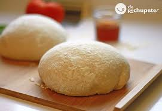

Masa de Pizza Casera
Ingredientes
25 gramos de levadura fresca
1 cucharada de azucar
500 gramos de harina
Pizca de sal
4 cucharadas de aceite
1 y 1/2 tazas de agua tibia
Procedimientos
En un bowl chiquito, colocar la levadura con media taza de agua tibia y una cucharada
de azucar. Mezclar bien hasta que se formen burbujas y dejar reposar por 5 minutos.
En otro bowl mas grande, colocar la harina y mezclarla con la sal. Hacer un hueco en el
centro, y luego volcar la mezcla de la levadura. Incorporar el aceite y el agua tibia.
Unir con las manos todos los ingredientes hasta formar una masa homoganea. Ir agregando
harina y/o agua para llegar a la consistencia deseada.
Dividir la masa en dos bollos del mismo tamaño. Dejar levar la masa por 30 minutos.
Una vez levada, estirar las masas hasta lograr un carculo. Amasar hasta darle el grosor
deseado (si se quiere una masa fina, amasar hasta que quede bien fina). A medida que se
amasa ir agregando harina para que no se pegue la masa.
Volcar la masa en una fuent, dejar descansar en lugar templado 5 minutos.
Llevar a horno moderado 15 minutos. Retirar del horno.
Cortesia de Tomas Anderson